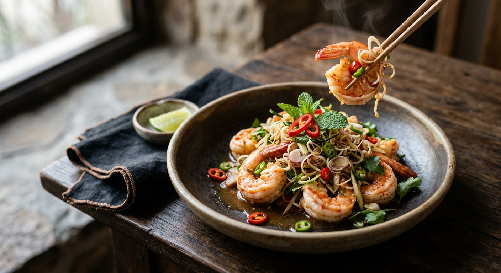

Prawns blanched to tenderness, tossed with fine-sliced lemongrass, makrut leaf and a lime-chilli dressing — the salad that smells like the herb garden before it bites.

พล่า is the branch of the yam family made with fresh meat — dressed with lime, fish sauce, chilli, fine-sliced lemongrass and mint, in Wongnai's own definition. Originally the meat went in raw; today the prawn version is blanched, because nobody wants to court hygiene on a weeknight. But the spirit survives: the herbs are not garnish, they are the dish.
The lemongrass does the heavy lifting. For ten prawns, Wongnai's palace version cuts a whole stalk of lemongrass into fine rings and adds three makrut leaves in shreds — more than the dressing itself. The dressing is small and sour-led: two tablespoons of lime to a teaspoon and a half of fish sauce, palm sugar, and a spoon of roasted chilli jam to carry the smoke.
Then the variations. Kapook's magazine version oil-shocks the prawns in hot oil instead of blanching — crisp outside, soft inside — and dusts them with roasted rice powder. Aroifin melts the chilli jam into coconut cream before the herbs go in. And Nlovecooking adds blanched pork mince and pork stock, the Laotian-leaning touch that turns a clean prawn salad into something rounder and richer.
| Thai | English | Amount |
|---|---|---|
| กุ้งสด ผ่าหลัง ดึงเส้นดำออก | Large prawns, butterflied and deveined | 10 |
| ตะไคร้ซอย | Lemongrass, finely sliced | 1 stalk |
| หอมแดงซอย | Shallots, sliced | 4 |
| ใบมะกรูดซอย | Makrut lime leaves, finely sliced | 3 leaves |
| พริกขี้หนูซอย | Bird's eye chillies, sliced | 4 |
| พริกชี้ฟ้าแดงซอย | Red spur chilli, sliced (garnish) | 1 |
| น้ำปลา | Fish sauce | 1½ tsp |
| น้ำมะนาว | Lime juice | 2 tbsp |
| น้ำตาลปี๊บ | Palm sugar | 1 tsp |
| น้ำพริกเผา | Roasted chilli jam (nam prik pao) | 1 tbsp |
| ใบสะระแหน่ | Mint leaves (garnish) | to finish |
The seller's batch (TrueID): 10–15 banana prawns, ½ cup lemongrass, 1 tbsp makrut leaf, ½ cup shallots, plus garlic, light soy and salt in the dressing — finished with fried dried chillies. The coconut version (Aroifin): the same prawn-and-herb core, with the chilli jam first melted into 2 tbsp coconut cream. The rice-powder version (Kapook): 250 g prawns oil-shocked, 3 tbsp lemongrass, 1 tbsp roasted rice powder, chilli powder instead of fresh chillies.
Blanch or oil-shock. Four sources blanch the prawns in water; Kapook's magazine recipe flash-fries them in hot oil — the "สะดุ้ง" (shock) school, crisp shell-side and soft inside. Both are legitimate; the blanched version is the cleaner, more common home form.
Coconut cream. Only Aroifin melts the chilli jam into coconut cream before building the dressing. The others keep the dressing clear — lime, fish sauce, sugar, jam. The cream softens the bite; the clear dressing keeps it sharp.
The sweetener. Wongnai and Kapook use palm sugar; TrueID, Aroifin and Nlovecooking use white sugar. Palm sugar rounds the lime; white sugar keeps the dressing bright.
The sour-salt balance. Wongnai's palace version is deliberately light on fish sauce — 1½ tsp against 2 tbsp of lime — a sour-led dressing. TrueID, Aroifin and Nlovecooking run 1–3 tablespoons of fish sauce, roughly equal to the lime. The palace version is perfume; the street version is flavour.
The extras. Nlovecooking folds in blanched pork mince and pork stock; Kapook dusts roasted rice powder; TrueID adds light soy, salt and garlic to the dressing. None of the others touch these — they are each source's private signature.
This recipe is translated from the following Thai-language sources. Where they disagree, we've said so.
1. Wongnai — "วิธีทำ 'พล่ากุ้ง' เมนูอาหารไทยชาววัง รสจัดจ้าน ทำง่ายได้ที่บ้าน" (the recipe used here) — wongnai.com
2. TrueID — "สูตรทำ พล่ากุ้ง รสเด็ด ทำกินเองง่ายๆ ทำขายก็ดี" by ครัวพิศพิไล (the seller's batch) — food.trueid.net
3. Kapook — "ยำกุ้งสะดุ้งแซ่บ พล่ากุ้งรสเด็ดสุดอร่อย" (the oil-shocked version) — cooking.kapook.com
4. Aroifin — "วิธีทำพล่ากุ้ง รสจัดจ้าน แซ่บครบรส กุ้งเด้ง หอมสมุนไพรสุดๆ!!" (the coconut-cream dressing) — aroifin.com
5. Nlovecooking — "พล่ากุ้ง อาหารอร่อยๆ เมนูกุ้ง พร้อม 6 เคล็ดลับวิธีทำพล่ากุ้ง" (the pork-and-stock version) — nlovecooking.com